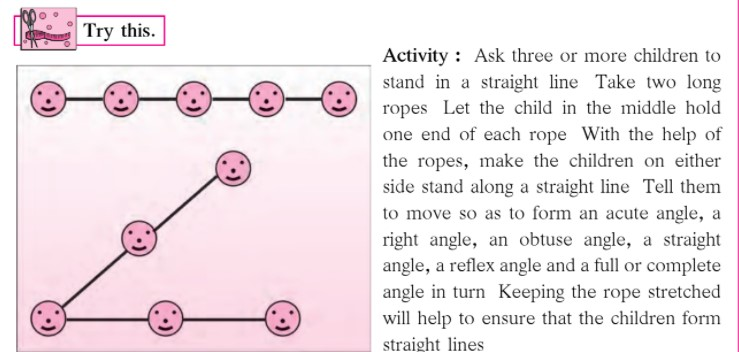
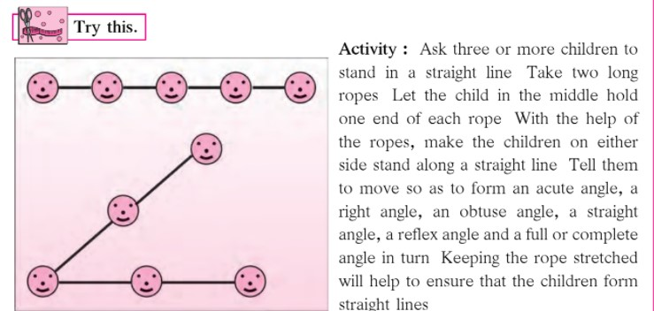

2. Angles
Let’s recall.
Look at the angles shown in the pictures below Identify the type of angle and write its name below the picture
Complete the following table :
 
Try this
Use two sticks of different colours to make the angles from angle (a) to angle (g)
My friend, Maths : At the fair, at home, in the garden.
Look at the pictures above and identify the different types of angles
PRACTICE SET 2
Q1. Match the following
Q2. The measures of some angles are given below. Write the type of each angle:
Solution:-
Q3. Look at the figures below and write the type of each of the angles
Solution:-
Q4. Use a protractor to draw an acute angle, a right angle and an obtuse angle
Solution:-
Let's recall.
Let’s learn.
(1) To draw an angle bisector using a compass.
(2) To construct an angle equal in measure to a given angle, using a compass and ruler.
Try this.
(1) Construct an angle bisector to obtain an angle of 30°.
First construct an ∠ABC of measure 60° Use a compass and ruler to bisect
∠ABC What is the measure of each angle so formed? Verify using a protractor
Solution:-
In order to get a bisected angle of a given measure, the student has to draw the angle having twice the measurement of required bisected angle. For getting measurement of 30° (for the bisected angle), one has to make an angle of 60° (i.e. 30° × 2).

(2) Construct an angle bisector to draw an angle of 45°.
Draw two intersecting lines perpendicular to each other Construct an angle
bisector to get an angle of 45°.
Solution:-
For getting measurement of 45° (for the bisected angle), one has to make an angle of 90° (i.e. 45° × 2).